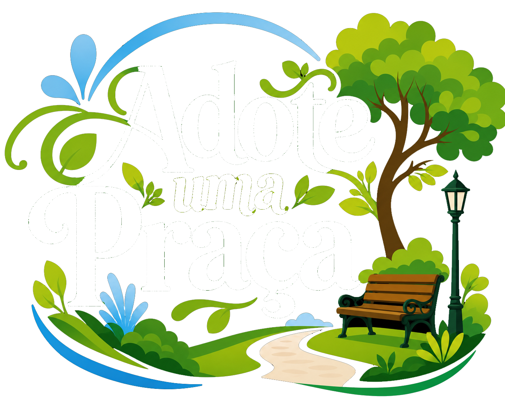
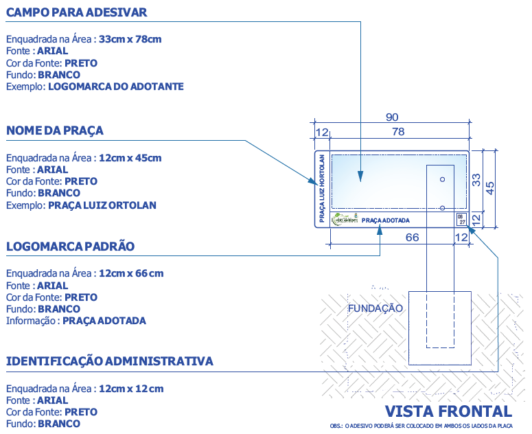

Dê visibilidade a sua marca e reconhecimento dos valores da sua empresa quanto ao cuidado, responsabilidade e colaboração com o patrimônio ambiental e cultural da cidade .
Por que adotar uma praça?
O Programa Adote uma Praça é como um convite para que todos ajudem a cuidar de um pedacinho especial da Cidade. Quando uma praça recebe carinho, flores, árvores, bancos limpos e espaços bem cuidados, ela deixa de ser apenas um lugar de passagem e se transforma em um cantinho de encontro, lazer, alegria e convivência. Com a participação da comunidade, das empresas e do Poder Público, esses espaços ganham vida nova, ficam mais bonitos, acolhedores e cheios de natureza. Assim, cuidar de uma praça é também cuidar das pessoas, do meio ambiente e da cidade, fortalecendo a ideia de que os bens públicos pertencem a todos e merecem ser preservados com responsabilidade e afeto... e lembrando que o processo é 100% digital, rápido e direto, bem aqui neste site!
Transformando
vidas e espaços
Uma praça bem cuidada é um convite para brincar, descansar e conviver.
Com limpeza, preservação e pequenas melhorias, ela se transforma em um espaço mais bonito, alegre e acolhedor.
Junte-se a essa transformação
Deixe sua marca na cidade e ajude a transformar um espaço público em um cantinho cheio de vida, beleza e cuidado. Esse lugar pode florescer, acolher pessoas, inspirar encontros e se tornar motivo de orgulho para toda a comunidade.
Sua marca é muito importante
Sua marca ganha destaque aparecendo em placas personalizadas, mostrando que você, sua associação ou sua empresa ajuda a semear sustentabilidade, cuidado e amor pela cidade.
Você não precisa ser um especialista no planejamento, paisagismo ou projetos executivos, apenas ter vontade de impactar sua marca e deixar Dois Vizinhos/PR ainda mais cuidada para as comunidades locais. Para iniciar esta transformação explore o site e veja como é simples !!!
Como você quer cuidar da praça?
Em Dois Vizinhos/PR, você pode adotar praças, jardinetes, núcleos ambientais, largos e outros espaços públicos para torná-los mais bonitos e funcionais. Escolha como quer contribuir e detalhe no formulário próprio sua escolha para ser avaliada pela Secretaria de Meio Ambiente e Recursos Hídricos.
Quero realizar embelezar e fazer uma manutenção!
Ao adotar um espaço público com foco em manutenção, você se compromete com cuidados regulares como:
- Varrição e roçada mensal
- Poda de arbustos
- Replantio de flores de época nos canteiros
- Reposição de areia em parquinhos e canchas
- Manutenção e pintura de brinquedos, quadras, bancos, lixeiras e demais mobiliários
- Conservação de calçadas, acessos e monumentos
- Outros serviços necessários para manter o espaço em boas condições de uso

Quero transformar com obras!
Você também pode ir além da manutenção e revitalizar a praça com melhorias que mudam a cara do espaço. Isso inclui:
- Implantação ou reforma de estruturas e equipamentos
- Plantio de árvores ou novas espécies vegetais
- Substituição de mobiliários urbanos
Toda revitalização deve ser aprovada pela Secretaria do Meio Ambiente e Recursos Hídricos e, em caso de obra civil, é necessário apresentar projeto com ART ou RRT do responsável técnico.

Como Adotar Sua Praça
1. MAPA INTERATIVO
Através do Mapa Interativo escolha o logradouro que você quer transformar. Utilize o filtro Região e depois o filtro específico de Bairros onde encontrará áreas com disponibilidade de Adoção.
2. Fale conosco
Envie um e-mail para adoteumapraca@doisvizinhos.pr.gov.br descrevendo como pretende cuidar da praça (manutenção ou revitalização) e anexando os documentos necessários ( ANEXOS )
3. Aguardar aprovação
Após a análise da Secretaria de Meio Ambiente e Recursos Hídricos, será publicada no Diário Oficial, abrindo prazo de 5 dias úteis para manifestação de outros interessados. Sem oposição, o interessado é liberado para assinar o Termo de Cooperação, também publicado oficialmente, que oficializa: Mãos à Obra!!!
Perfis de Adotantes
Adotante Pessoa Física
Estabelecem relação afetiva e até de pertencimento com a área adotada.
- Documento de Identidade
- CPF
- Comprovante de residência
*Os documentos serão enviados na última etapa do processo
Adotante Pessoa Jurídica
Associam a sua imagem à responsabilidade social, cultural e ambiental.
- Contrato social
- Documento de identidade
- CPF do representante legal
*Os documentos serão enviados na última etapa do processo
Comunidade Local
Condomínios e associações de moradores podem garantir a preservação e o uso adequado dos espaços pela comunidade.
- Estatuto da instituição
- CNPJ
- Ata da assembleia que nomeia o síndico, diretor ou presidente
- CPF do síndico, do diretor ou presidente
*Os documentos serão enviados na última etapa do processo
Encontre Sua Praça
Filtre pelo seu bairro, clique nos ícones para conhecer as praças disponíveis e escolher a sua.
Placa de Identificação do Adotante

A quantidade de placas será proporcional à metragem da área adotada, observados os critérios estabelecidos pela Administração Pública.
Importante:
- As placas têm caráter publicitário exclusivamente para a divulgação da marca do adotante.
- A placa pode conter o nome e a logomarca do adotante
Perguntas Frequentes
Tire suas dúvidas sobre o programa Adote uma Praça
As placas indicativas da adoção devem seguir padrão estabelecido pelo ANEXO II - PUBLICIDADE DA MARCA OU NOME de Adoção.
Lei nº 11.642 - de 22 de dezembro de 2005 regulamentada pelos decretos nº 793/2006, nº 792/2007 e nº 1666/2013 "Instituí o Programa de Adoção de Logradouros Públicos, revoga a lei nº 7.628, de 16 de abril de 1991 que 'dispõe sobre a permissão de uso para publicidade, com encargos de conservação de logradouros públicos', e dá outras providências."
Decreto nº 792 – de 24 de julho de 2007 Regulamenta a lei municipal nº 11.642/2005 que institui o programa de adoção de logradouros públicos no município de Curitiba.
Decreto nº 1.666 – de 9 de dezembro de 2013 Regulamenta a lei municipal nº 11.642, de 22 de dezembro de 2005 que institui o programa de adoção de logradouros públicos no município de Curitiba no que se refere à adoção de praças, jardinetes, largos, jardins ambientais, eixos de animação, núcleos ambientais, centros esportivos, relógios e canteiros centrais de ruas e avenidas e altera o decreto municipal nº 792, de 24 de julho de 2007.
Lei nº 14.365 - de 06 de dezembro de 2013 Altera os arts. 2º, 4º, 8º, 9º, 10 e 11 e acrescenta inciso ao art. 5º da lei nº 11.642, de 22 de dezembro de 2005, que institui o programa de adoção de logradouros públicos e dá outras providências.
Lei nº 15.172 - de 02 de março de 2018 Altera a lei nº 11.642, de 22 de dezembro de 2005, que 'institui o programa de adoção de logradouros públicos, revoga a lei nº 7.628, de 16 de abril de 1991 que "dispõe sobre a permissão de uso para publicidade, com encargos de conservação de logradouros públicos" e dá outras providências'."
Decreto nº 52 – de 16 de janeiro de 2019 Altera o decreto municipal nº 1.666, de 9 de dezembro de 2013, que regulamenta a lei municipal nº 11.642, de 22 de dezembro de 2005, alterada pela lei municipal nº 15.172, de 2 de março de 2018, que institui o programa de adoção de logradouros públicos.
Decreto nº 725 – de 15 de maio de 2024 Regulamenta no âmbito da administração municipal direta, autárquica e fundacional, a outorga de permissão de uso de bens imóveis integrantes do patrimônio público municipal.
Para realização de eventos, deverão ser feitos os procedimentos legais junto à Secretaria Municipal de Recursos Hídricos e demais órgãos envolvidos a que se destina o tipo de evento.
COMUNIDADE LOCAL (Condomínio, clube ou associação): Estatuto da instituição, CNPJ, Ata da assembleia que nomeia o síndico, diretor ou presidente e Documento de identidade e CPF do síndico, do diretor ou presidente.
2. Após protocolado a proposta de cooperação será analizado pela comissão competente.
3. Se todos os documentos estiverem de acordo, será publicado no Diário Oficial do Município a Intenção de Adoção, com o prazo de 5 dias para manifestação de outros interessados.
4. Encerrado o prazo de 5 dias, será Assinado o Termo de Acordo;
5. O Termo assinado será divulgado no Diário Oficial do Município e a adoção estará consolidada, iniciando seu prazo de vigência.
Quando “Implantação de novo projeto de paisagismo e/ou manutenção”, entre as etapas 1 e 2 da sequência anterior, haverá a etapa de análise de projeto pela Secretaria de Meio Ambiente e Recursos Hídricos.
É necessário que haja um Termo de Cooperação vigente, com o compromisso firmado entre o adotante e o poder público, para que possa ser submetida, aprovada e posteriormente realizada qualquer intervenção na área.